Avant de commencerCe qu'il faut pour jouer
Un navigateur WebGPU
Chrome, Edge ou Arc récents (ou Safari avec WebGPU activé). Tout le rendu — le trou noir, la lentille gravitationnelle, les planètes — est calculé sur la carte graphique.
Un clavier, une manette, un HOTAS ou un écran tactile
Le clavier donne accès à tout. Une manette Xbox / PlayStation est reconnue (avec une disposition de chasseur pour le F-35), comme les manches, manettes des gaz et palonniers ; sur téléphone et tablette, un manche et une manette des gaz apparaissent à l'écran.
La qualité « jeu »
Les scènes de jeu démarrent en qualité 6 (game). Si l'image saccade, essayez 5 ; pour une image fixe très fine, 3 ou 4.
En français ou en anglais
Le jeu parle la langue du navigateur (le français s'il est réglé en français, l'anglais sinon) ; l'écran titre permet d'en changer, et le choix est gardé. Quelques termes restent en anglais, comme dans un vrai cockpit (PLAN, EXECUTE, SHOOT, IN RANGE…).
Métrique par défaut
Altitudes en mètres, vitesses en m/s, distances en km — partout : HUD, cartes, TARS, la console d'équipage. Les unités impériales (pieds, nœuds, milles) sont une option des réglages.
L'interfaceL'écran titre, la barre du haut, la roue et le menu pause
L'écran titre
À l'ouverture : Continuer (la partie là où vous l'avez laissée), Missions (le voyage, Artemis, le trou de ver, Gargantua), Explorer (la galerie des scènes : la Terre, le système solaire, les trous noirs), Mode photo, Réglages et le Kerr Bench (mesurer sa machine) — et le choix de la langue. Le menu pause le rouvre (Écran titre).
La barre du haut
Une seule barre, en haut, dans tous les modes (l'ancienne barre d'outils du bas n'existe plus). De gauche à droite :
- L'emblème de TARS — il respire au repos et montre ce qu'il fait ; un clic lui parle (F6)
- Les quatre onglets — Vaisseau · À pied · Caméra libre · Photo (F1–F4) ; un onglet impossible à cet instant est grisé, sa raison dans sa bulle
- Le groupe du mode — en vol : les voyants, les horloges, l'engin piloté, sa vue ; à pied : le monde et le lieu
- Le temps — pause, plus lent / plus rapide, temps réel, enregistrement d'une prise
- Les actions — Atlas, trépied, le ciel d'ici, observatoire, surimpression, placer, scènes, météo, éclipses, carte du ciel, musique, son, capture, rendu, détails, aide, réglages ; ce qui ne tient pas passe sous ⋯
- Masquer — la barre se cache ; la poignée en haut la ramène
La roue — Tab maintenu
Maintenez Tab : une roue s'ouvre (jusqu'à 800 px de diamètre) ; pointez un secteur à la souris et relâchez pour l'exécuter, un secteur marqué ▸ ouvre sa propre roue. Le centre dit l'élément pointé, sa touche et s'il est engagé. Un appui bref sur Tab reste « la cible suivante » (en F-35 : le verrou radar suivant). La roue dépend de ce que vous faites :
- Hors vol — la vue, regarder la cible, le télescope, le ciel d'ici, l'observatoire, la surimpression, la scène (jet, surface liquide, guide d'ombre, son, plein écran), piloter, placer le vaisseau, Voler en F-35, Défis F-35, Réseau, les cinématiques, le ciel, la photo.
- Aux commandes d'un vaisseau spatial — SAS, prograde, rétrograde, vers la cible, les autopilotes ▸, la navigation ▸ (carte, placer, plan de vol, approche ILS…), la caméra ▸ (vue, photo, replay, bande‑annonce).
- En F-35 — dix secteurs : voir la roue du F-35.
Le menu pause — Échap
Le temps s'arrête ; le menu propose : reprendre, Capture (la vue de l'instant rendue sans bruit, enregistrée en PNG une fois convergée), Rendu… (une image ou une vidéo), sauvegarder, charger, l'Atlas, Le ciel d'ici, la surimpression, l'observatoire, Réseau — jouer ensemble, placer le vaisseau, la date et l'heure, la météo, les éclipses, rendre les commandes (si un autopilote ou une mission tourne), les réglages, les commandes (clavier, manettes et HOTAS), le mode photo et l'écran titre. Les flèches ↑ ↓ s'y déplacent, comme à la manette.
Les scènes

Les réglages
Le bouton Réglages de la barre du haut (ou M hors vol, ⇧M en vol, ou le menu pause) ouvre le panneau : la scène, vos préréglages, la qualité, puis des onglets Caméra · Scène · Matière · Ciel · Physique · Rendu · Jeu (le groupe F-35, la formation, le trafic, le réseau sont sous Jeu). Chaque réglage modifié se remet par défaut d'un clic sur son point ; ⌘Z annule.


Activer ou désactiver le vaisseau
K (ou l'onglet Vaisseau, F1) fait apparaître le vaisseau dans n'importe quelle scène et vous met aux commandes : le HUD de vol s'affiche sous la barre du haut. L'onglet Caméra libre (F3) vous en détache — le vaisseau continue son vol — et F1 vous y ramène. Posé, ⇧K vous fait descendre à pied (voir les quatre modes).


Les autres panneaux


Les quatre modesF1 Vaisseau · F2 À pied · F3 Caméra libre · F4 Photo — les onglets de la barre du haut
Vaisseau — F1
Aux commandes : le Ranger, le Lander, l'Endurance ou le F-35, avec leur HUD, leurs autopilotes, la carte et le planificateur.
À pied — F2
Un astronaute sur la Terre, la Lune, Mars ou un monde de Gargantua : on marche, on court, on saute dans la gravité locale. ⇧K près d'un engin posé y remonte.
Caméra libre — F3
N'importe où dans le système, sans vaisseau ; un vaisseau piloté continue son vol, ses autopilotes et son plan.
Photo — F4
La vue seule : exposition, focale, profondeur de champ ; le rendu hors ligne d'une image ou d'une vidéo. Échap revient au mode d'avant.
À pied
| Touche | Effet |
|---|---|
| Z Q S D · ⇧ | Marcher par rapport à la caméra (WASD en QWERTY) · courir |
| Espace | Sauter, avec la gravité du lieu |
| Glisser · molette | Tourner autour du personnage · distance de la caméra |
| M | La carte du lieu |
| Y · ⇧T | Le trépied posé là où l'on se tient, puis le télescope · le trépied seul, tourné comme vous |
| ⇧K | Remonter dans un engin posé (s'approcher de son accès) |
Le HUD à pied donne la latitude et la longitude, l'altitude, une boussole, une carte orientée et la direction de votre engin.
Aller partout
- L'Atlas (F8, la barre du haut, le menu pause) — la Terre, la Lune et Mars en cartes : une centaine de destinations, des coordonnées, et sur la Terre toute adresse (recherche Photon / OpenStreetMap). La fiche d'un lieu dit son altitude, sa distance, s'il y fait jour ; et vous y met : en orbite au‑dessus, l'engin posé, à pied, la caméra libre au‑dessus, un trépied.
- Placer (la barre du haut, le menu pause) — le vaisseau en orbite, au sol, à pied ou à côté d'un astre, cherché par son nom : une destination, une piste, des coordonnées ou une adresse.
- Le ciel d'ici (⇧F8) — depuis la Terre : filés d'étoiles, analemme, la Lune, l'ISS et ses transits, les éclipses, le sélénélion ; y aller, le vivre, le rendre.
- L'observatoire (⇧Y) — ce qu'il y a à voir depuis le sol de la Terre (le Soleil, la Lune, les planètes et leurs lunes, l'ISS, les étoiles brillantes, le trou de ver), quand il sera visible et à son meilleur ; le télescope y est porté, tout de suite ou au bon moment.
- La capture (la barre du haut, le menu pause) — dans tous les modes, la vue de l'instant rendue hors ligne et enregistrée en PNG une fois convergée.
Le parcoursLe voyage du film, de la Terre à Gargantua
La scène game:interstellar commence le 1er janvier 2067 à 10 h, le Ranger posé sur le pas de tir de Kennedy, en temps réel. Le système solaire est à l'échelle, les planètes à leur vraie place (éphémérides de la NASA).
- DécollerAppuyez sur U : l'autopilote fait le virage gravitationnel jusqu'à l'orbite basse. Vous pouvez aussi décoller à la main : gaz à fond (W en AZERTY), puis inclinez doucement le nez vers l'est.

1er janvier 2067 : le Ranger posé sur le pas de tir, Saturne visée. 
Quelques dizaines de secondes après U : moteurs allumés, « TAKE‑OFF TO ORBIT ». - Viser SaturneOuvrez la carte avec M. Un clic sur un astre le prend pour cible ; Tab / ⇧Tab font défiler les cibles. Saturne est la cible par défaut.
- Planifier le transfertAppuyez sur O pour l'onglet MISSION de l'ordinateur de bord : choisissez la destination et l'arrivée (Orbit, Flyby, rendez‑vous, passage du trou de ver…), cliquez PLAN — le trajet s'affiche sur la carte —, puis EXECUTE. Les allumages se font tout seuls ; accélérez le temps avec . entre deux.
- Trouver le trou de verIl attend à 0,7 UA derrière Saturne. Ciblez‑le sur la carte puis 0 : l'autopilote d'approche vous y conduit.
- TraverserDe l'autre côté : Gargantua (10⁸ masses solaires, spin 0,998), son disque, et les mondes de Miller, Mann et Edmunds. Mêmes outils : carte, planificateur, autopilotes.

Posé sur Miller, Gargantua au‑dessus de l’océan. - Se poserF7 pose le vaisseau sur le monde visé (atterrissage propulsé) ; depuis l'orbite de la Terre, ⇧G fait la rentrée et l'atterrissage sur une piste. Depuis le sol, U redécolle ; ⇧K vous fait descendre à pied.


Le jeu se sauvegarde tout seul dans le navigateur et reprend là où vous l'avez laissé à la visite suivante. Les autres scènes (galerie Scenes dans la barre d'outils) sont des points de vue libres : le trou noir, l'ISS, la flotte, les mondes de Gargantua…
Piloter le RangerLa disposition de Kerbal Space Program, adaptée à l'AZERTY
Les touches de vol sont lues par leur position physique : sur un clavier AZERTY, ce sont Z Q S D, A E et W X. Elles ne servent qu'à voler — aucun autre raccourci n'est posé dessus.
Le HUD de vol
En vol, le groupe du mode dans la barre du haut porte les voyants (SAS · HOLD · AUTO), les horloges (temps du vaisseau, temps lointain, leur rapport, date terrestre), l'engin piloté et sa vue. Le HUD s'affiche dans les vues extérieures (dorsale, poursuite) ; dans le cockpit, ce sont les écrans de bord qui parlent. Il y en a trois, choisis par la phase du vol — Atmosphère, Espace, Approche — ou imposés avec ⇧².
- En haut à gauche — la cible : distance, vitesse d'approche, plus courte distance
- En haut à droite — le Ranger : statut (posé, en vol, en orbite…), altitude, vitesse, Pe · Ap
- À gauche / à droite — les échelles de vitesse et d'altitude
- En bas à gauche — l'orbite à l'échelle autour de l'astre
- En bas au centre — la boule de navigation, les maintiens et les autopilotes
- En bas à droite — la mini‑carte (3D · Globe · Planisphère)

Les commandes de vol
| AZERTY | QWERTY | Action |
|---|---|---|
| Z S | W S | Tangage : piquer · cabrer |
| Q D | A D | Lacet : gauche · droite |
| A E | Q E | Roulis |
| ⇧ · Alt ↑ · ↓ | idem | Gaz : monter · baisser (maintenu) — dans la vue Cabin, les flèches tournent le regard |
| W · X | Z · X | Plein gaz · gaz coupés |
| I K · J L · H N | idem | RCS (translation) : bas/haut · gauche/droite · avant/arrière |
| ⇪ Verr.Maj | Caps Lock | Commandes de précision (rotation, gaz et RCS fins) |
| T | T | SAS : maintien de l'attitude |
| R | R | Alignement du roulis : les ailes dans le plan de l'orbite, le nez tenu |
| F · ⇧F | F · ⇧F | Dans l'air : voler en fusée · en avion · avec l'ordinateur de vol — l'antigravité |
| P · ⇧P | P · ⇧P | Volets (rentrés · mi · pleins) · aérofrein |
| G | G | Train d'atterrissage : sorti · rentré (8 s ; verrouillé au sol ; une alarme s'il est rentré bas et lent) |
| ⇧F4 | ⇧F4 | Assisté : vous pilotez, le directeur de l'autopilote montre où pointer et combien de gaz |
| F3 | F3 | Spectateur (la caméra libre) : le vaisseau continue, ses autopilotes et son plan (F1 ou V pour revenir) |
| F6 | F6 | TARS : tapé, sa console ; tenu, lui parler (voir TARS) |
| Tab maintenu | idem | La roue : maintiens, autopilotes, navigation, caméra (voir l'interface) |
| * (PC) · ` (Mac) | \ | La vue Réalisateur, puis son plan suivant : au choix du réalisateur, poursuite, orbite lente, passage, suivi au sol, le limbe de la planète, la destination |
| Entrée | Enter | Acquitter l'alarme principale : le voyant éteint, l'alarme muette |
| ⌫ | Backspace | Reprendre la main : arrête la mission automatique, le maintien et l'autopilote en cours |
| Échap | Esc | Ferme le panneau du dessus ; sinon le menu pause (le temps s'arrête) : reprendre, sauvegarder, charger, réglages |
| ⇧K | ⇧K | Posé : descendre à pied — à pied, remonter à bord d'un engin posé |
| F5 · F9 | F5 · F9 | Sauvegarde rapide · chargement rapide |
Les engins
[ et ] passent d'un engin à l'autre : le Ranger, le Lander, l'Endurance et le F-35 (voir Piloter le F-35). Ceux qu'on ne pilote pas continuent leur trajectoire — et leur rotation — comme on les a laissés ; un engin laissé sur une piste y reste.

Les vues de bord
V / ⇧V font défiler les caméras du vaisseau : le cockpit (le siège du pilote, avec ses écrans), la coque, autour du vaisseau, libre, survol… ⇧R ramène la caméra à sa place d'origine. Glisser à la souris regarde autour ; un double‑clic regarde droit devant. ² règle la densité du HUD : complet · minimal · vue nette.
Dans le cockpit, les écrans affichent la vraie télémétrie du vol : devant le pilote l'horizon artificiel (assiette, vitesse, altitude, vitesse verticale) et la cible à côté ; devant le copilote l'orbite à l'échelle et les systèmes (poussée, ergols, SAS, maintien, autopilote) ; entre les sièges l'amarrage et le plan de vol ; sur les côtés et à l'arrière les horloges et le journal du pilote. Les manches bougent avec les commandes.
La vue Cabin laisse se déplacer dans la cabine : Z Q S D · A E déplacent la caméra (⇧ plus vite), glisser à la souris ou les flèches ← → ↑ ↓ tournent le regard — le vaisseau continue sa route, gaz inchangés. De même, dans la vue extérieure Free, les touches de vol déplacent la caméra autour du vaisseau au lieu de le piloter.


Maintiens & autopilotesLes chiffres du haut du clavier, en vol
Ils sont aussi sur la couronne de la boule de navigation : à gauche ATTITUDE (les maintiens), à droite AUTOPILOT (les autopilotes). Un clic les active.

| Touche | Effet |
|---|---|
| 1 2 | Tenir le prograde · le rétrograde |
| 3 4 | Tenir le radial + · radial − |
| 5 6 | Tenir la normale + · normale − |
| 7 | Tenir la cible (ANTI et NODE sont sur le panneau du HUD) |
| 8 | Autopilote : tenir la position |
| 9 | Autopilote : circulariser l'orbite |
| 0 · ⇧0 | Autopilote : approche de la cible · orbite autour de la cible |
| F7 | Autopilote : atterrissage propulsé, ici |
| ⇧G | Rentrée & atterrissage : depuis l'orbite, la poussée de désorbitation pour un site (l'onglet LAND de l'ordinateur le choisit), la rentrée guidée, le plané, la piste |
| U | Autopilote : décoller (virage gravitationnel jusqu'en orbite) |
| B | Autopilote : amarrage (l'ISS à moins de 3 km, ou un autre vaisseau de la flotte) |
| ⇧F4 | Assisté : l'autopilote vous guide au lieu de piloter |
Les autopilotes rendent la main à votre accélération du temps quand ils ont fini. Pendant la croisière, le SAS affiche PRO.

Les aides au pilotage du HUDTracées dans la vue, là où elles servent
Par‑dessus la vue, en cabine et en poursuite (allégées dans les vues extérieures), chacune avec son interrupteur dans Réglages › HUD aids :
- Près d'un astre — l'horizon et l'échelle de tangage à leur vraie place, la bande de cap en haut (nez, route, cible), l'échelle de roulis, les marqueurs radial et normal ; une flèche au bord de l'écran vers ce qui en sort.
- Dans l'air — l'angle d'attaque posé sur la symbologie : un crochet vert sur l'incidence de meilleure finesse, un repère ambre à 85 % du décrochage, une barre rouge au décrochage (le symbole du nez entre eux montre la marge) ; la bille de dérapage ; le chevron d'énergie (au‑dessus des ailes on prend de la vitesse) ; le facteur de charge ; le directeur de vol du calculateur.
- Le futur — la trajectoire prédite en perspective, les repères +10 / +30 / +60 s et ¼ d'orbite, le point d'impact au sol ou d'entrée dans l'air avec son compte à rebours.
- L'approche — la piste à sa place, son axe prolongé, le point visé de la pente (le vecteur vitesse dessus : on est sur la pente), la distance, l'écart d'axe, FLARE ; à la verticale, le radar de dérive, la vitesse verticale et le compte à rebours de l'allumage d'arrêt.
- Dans l'espace — l'encadré d'allumage (compte à rebours, Δv, durée, visée) ; à l'amarrage, les portes le long de l'axe du port et le viseur dans l'axe.
- Près de Gargantua — l'encadré relativité : dτ/dt, γ, Doppler du ciel devant, orbite liée ou évasion, ISCO, orbite des photons, horizon, marée.
La carte & le planificateurVoir où l'on va, et y aller
La carte 3D — M en vol
| Glisser | Tourner autour du point visé |
| Clic droit glissé · ⇧ glissé | Déplacer la vue |
| Molette | Zoomer vers le pointeur |
| Clic sur un astre | Le prendre pour cible |
| Double‑clic sur un astre | Le centrer (dans le vide : retour au cadrage automatique) |
| Clic sur la trajectoire | Poser un nœud de manœuvre ; tirer ses poignées pour régler le Δv ; clic droit ou Suppr pour l'enlever |
| Survol d'un astre | Sa fiche : distance, rayon, période, sphère d'influence |
En plein écran, la carte dessine ses astres sur la carte graphique : les vraies images des planètes, les nuages et les lumières des villes de la Terre, les anneaux de Saturne, le disque et l'anneau de photons de Gargantua. L'ordinateur de bord est à gauche, son analyse à droite (chacun se replie), et une bande compacte en bas donne l'altitude, la vitesse, la périapside, l'apoapside et les boutons du hub. La barre de la carte choisit le Focus (l'astre au centre), le Plane (plan de référence : écliptique, équateur, orbite du vaisseau ou de la cible), la vue de dessus / en biais / par la tranche, l'échelle Log pour voir à la fois tout le système et une orbite basse, et la légende (ce que signifie chaque trait et chaque repère). La frise temporelle en bas montre où tout sera : faites glisser la poignée, cliquez sur un repère (nœud, approche au plus près, entrée dans une sphère d'influence, périapside, impact…) pour y sauter.

Dans la vue elle‑même, ⇧Y affiche la trajectoire future sous forme de tube cyan.
Les missions — O en vol (l'onglet MISSION de l'ordinateur de bord)
- Choisir la destinationDans la liste groupée par astre : planètes, lunes, l'ISS, les vaisseaux, le trou de ver — ou, de l'autre côté, Miller, Mann, Edmunds, l'étoile compagne, l'embouchure.
- Choisir l'arrivéeOrbit (transfert puis capture en orbite circulaire, à l'altitude voulue), Flyby (survol), Free return (tour de la Lune et retour sans allumage, comme Apollo 13 ou Artemis II), rendez‑vous avec un vaisseau ou l'ISS ; la fenêtre (la prochaine, ou partir maintenant).
- PLANLe trajet est calculé (en N corps de notre côté, sur les géodésiques de Kerr autour de Gargantua, en arrière‑plan) puis tracé en violet sur la carte, le globe et le planisphère avant d'être exécuté, avec chaque allumage, son Δv, les dates et l'arrivée.
- EXECUTEAdopte l'aperçu et le vole (TO THE PLAN l'adopte sans l'exécuter, DISCARD l'efface) ; le vaisseau s'oriente et allume tout seul à chaque nœud, corrections en route comprises. Vous pouvez aussi créer vos nœuds à la main (un clic sur la trajectoire) et les façonner.
Les opérations de l'onglet ORBIT (mise en orbite à l'altitude et l'inclinaison voulues, circulariser, apoapside, périapside, Hohmann, inclinaison, résonance) sont prévisualisées de la même façon. Les boutons du hub (HOLD POS, CIRC, APPROACH, LAND, TAKE OFF, ENTRY) lancent exactement les mêmes opérations que l'ordinateur de bord.
Caméra & tempsValables dans tous les modes, en vol comme hors vol
Le temps
| AZERTY | QWERTY | Action |
|---|---|---|
| Espace | Space | Lancer · mettre en pause (en pause, l'image s'affine) |
| ; · : | , · . | Accélération du temps : moins vite · plus vite (jusqu'à ×1 000 000) |
| ! | / | Retour au temps réel |
| ● sur la barre du temps | Enregistrer une prise — Render › Video la rend en pleine qualité | |

La caméra
| V · ⇧V | Vue suivante · précédente (sans vaisseau : autour · suivi · libre · trépied · chute libre) |
| C | Regard verrouillé sur la cible, où que soit la caméra |
| Y | Télescope : champ jusqu'à 0,02°, tenu sur la cible (la molette zoome) — à pied, le trépied posé d'abord là où l'on se tient |
| ⇧Y | Hors vol : l'observatoire (ce qu'il y a à voir depuis la Terre, et quand) — en vol : la trajectoire future dans la vue |
| Tab · ⇧Tab | Cible suivante · précédente (ou un clic dessus dans la vue) — Tab maintenu : la roue |
| Glisser | Tourner autour de la cible · sinon regarder autour |
| Clic droit · ⇧ glissé | Autour : décaler la vue · libre : roulis |
| Molette · pincer | Distance · avancer / reculer · zoom du télescope |
| Alt + molette | Objectif (champ de vision) |
| Double‑clic | Voler jusqu'à un astre et le cadrer · sur le ciel : recentrer / remettre à niveau |
| R · ⇧R | Vue suivante · recentrer (hors vol) |
| ← → ↑ ↓ · + − | Tourner (libre : pivoter) · zoom |


La caméra libre (sans vaisseau)
| Z Q S D | Avancer · gauche · reculer · droite (⇧ plus vite) |
| A · E | Descendre · monter |
| W · X | Roulis |
| Clic du milieu | Regard à la souris, comme dans un jeu (Échap pour sortir) |
| B | Chute libre le long de la géodésique (les touches poussent) ⟷ libre |
| O · ⇧C · T | Orbite automatique · plongée vers l'horizon · voyage par le trou de ver |
| ⇧T | Trépied posé au sol du monde visé (sinon le plus proche), face à l'horizon |
Toutes les autres touchesLe ciel, la scène, l'interface
| Le ciel (notre côté) | |
|---|---|
| N · ⇧N | Constellations · noms des étoiles brillantes |
| U | Grilles : équatoriale · horizontale · les deux · aucune |
| Carte du ciel (barre du haut) | La carte du ciel complète |
| Réglage Réfraction atmosphérique | L'air de la Terre relève les astres d'un demi-degré à l'horizon : le Soleil couchant aplati, encore vu quand il est déjà dessous ; au téléobjectif, son bord haut vert et, à la dernière seconde, le rayon vert (allumée par défaut) |
| La scène | |
|---|---|
| J · G | Jet · guide de l'ombre |
| L | Mode cinéma : surface liquide du trou de ver |
| K · ⇧K | Monter à bord du Ranger · vue suivante |
| 1–6 | Qualité (5 : temps réel max, 6 : jeu) |
| L'interface | |
|---|---|
| M · ⌘K | Réglages · les chercher (en vol : ⇧M) |
| F1–F4 | Les modes : Vaisseau · À pied · Caméra libre · Photo |
| F6 | TARS, dans tous les modes : tapé, lui écrire · tenu, lui parler |
| F8 · ⇧F8 | L'Atlas · le ciel d'ici (filés, analemme, ISS, éclipses) |
| F5 · F9 | Sauvegarde rapide · chargement rapide |
| I | Détails & mesures physiques |
| H · F · P | Masquer l'interface · plein écran · capture PNG (en vol, ces lettres pilotent : les boutons de la barre) |
| Échap | Ferme le panneau du dessus ; sinon le menu pause |
| ⌘Z · ⇧⌘Z | Annuler · rétablir |
| F10 | Outils de jeu (pour les développeurs : une version locale ou ?dev) |
| ? | Aide‑mémoire des touches (clavier, manettes) |


En vol, certaines lettres changent de sens (M carte, O planificateur, U décollage, G train, B amarrage…) : ce sont celles des sections précédentes qui s'appliquent.
Le cockpit du RangerVue Cockpit : tout se commande au pointeur (celui du F-35 : plus bas)
Dans la vue cockpit, une vingtaine de commandes répondent au pointeur, comme les touches : le levier du train (qui voyage jusqu'à sa position), les volets, l'aérofrein, les gaz, le SAS, les maintiens, les autopilotes, les feux, l'éclairage de la cabine, le chronomètre. Survolées, elles disent ce qu'elles font.
- Huit écrans à pages — PFD (assiette, vitesse, altitude ; dans l'air l'incidence, l'énergie, le directeur), ORBIT, NAV, SYSTEMS, DOCKING, PLAN (les nœuds ou le graphe de l'assistance), CLOCKS, LOG, et en approche APPROACH et LANDING. Les onglets en haut de chaque écran changent sa page ; un second clic le rend à sa page automatique.
- Les lumières — la cabine baissée la nuit, rouge en mode NIGHT, éclairée par ses écrans ; les feux de navigation, les stroboscopes et les phares d'atterrissage sur la coque.
- Le rapport de vol — après un posé ou un amarrage, une note sur 20 et sa lettre : vitesse, axe, taux de chute, précision.

Piloter le F-35Un chasseur au-dessus de la vraie Terre : le F-35B (STOVL) ou le F-35C (porte-avions)
Le F-35 vole avec les forces du vrai avion : son réacteur F135 (120 kN à sec, 176 kN avec la postcombustion, qui baissent avec l'altitude et le Mach), son carburant, ses commandes de vol électriques. Mesuré dans le jeu : Mach 1,6 à 11 km avec postcombustion, 7 g (réglable de 5 à 9), 50° d'incidence tenus sans jamais partir en vrille, un décollage en une dizaine de secondes.
Monter à bord
- Voler en F-35 (la roue hors vol) ou Préparer un vol (en vol : Tab maintenu › Navigation) — un aérodrome ; un départ (aligné sur la piste en service, en finale à 15 km et 900 m, ou en croisière à 40 km, 6 000 m et 230 m/s) ; l'heure de l'aérodrome (comme elle est, aube, matin, midi, crépuscule, nuit) ; la météo ; le carburant ; un plan de vol vers un autre aérodrome — puis Voler.
- Défis F-35 (la roue hors vol) ou une mission, une leçon, une vue d'exception : l'avion est placé tout seul.
- [ ] : le F-35 est l'un des engins de la flotte ; choisi ainsi, il est posé sur la piste la plus proche.
Les commandes du F-35
Les touches de vol sont celles du Ranger (Z S tangage, Q D lacet, A E roulis, ⇧ / Alt les gaz, W / X plein gaz / coupé), lues par leur position physique. S'y ajoutent :
| AZERTY | QWERTY | Action |
|---|---|---|
| ⇧W | ⇧Z | Postcombustion (la manette au cran, poussée ×1,5) |
| ù · ⇧ù | ' · ⇧' | Pilote automatique : altitude et cap tenus (le manche passe outre ; lâché, les nouveaux sont tenus) · auto‑manette : la vitesse tenue (⇧ / Alt la règlent) |
| ⇧, | ⇧M | NAV : le pilote automatique suit le plan de vol (LNAV la route, VNAV ses altitudes et vitesses) ; le manche le coupe |
| ⇧O | ⇧O | Le panneau du plan de vol : les points posés sur la carte, leurs contraintes, le carburant, le bingo, Procédures (départ et arrivée) |
| ⇧B | ⇧B | F-35B : mode STOVL — la soufflante, la tuyère pivotée ; sous 65 m/s la loi de stationnaire (le manche une vitesse sol, ⇧ / Alt une vitesse verticale, lâché : tenu sur place) |
| G · P · ⇧P | idem | Train · volets · aérofreins |
| U · F7 | idem | Décollage automatique · atterrissage automatique (près d'un porte-avions : l'appontage) |
| ⇧X | ⇧X | Retour au vol stable : les ailes à plat d'abord, puis une légère montée à une vitesse sûre, puis les tenues — à tous les niveaux d'assistance |
| Tab · ⇧Tab | idem | Le verrou radar sur la piste suivante · l'interception de la cible verrouillée — Tab maintenu : la roue du F-35 |
| Espace (maintenu) · Entrée | idem | En combat : le canon · l'arme choisie (la pause passe alors sur Échap) |
| = · ) ou < | = · − | En combat : l'arme suivante · leurres IR et paillettes (les deux touches à droite du 0 ; sur un Mac français, l'arme suivante est sur -) |
| ⇧L | ⇧L | En combat : la tête verrouillée sur la cible — elle suit le verrou, puis la cible du missile, l'épave qui tombe, son crash ; encore : la tête libre |
| F13 | F13 | La roue des ordres de patrouille directement (réassignable, ou sur un bouton du HOTAS) |
| V · ⇧T | idem | Vue suivante · trépied au sol |
Piloté, le F-35 laisse de côté ce qui est propre aux vaisseaux spatiaux : pas de tenue prograde, pas d'alignement du roulis, pas d'autopilote orbital, pas de cible parmi les planètes — ces touches le disent au lieu d'agir.
La roue du F-35 — Tab maintenu
| Secteur | Ce qu'il contient |
|---|---|
| Pilote auto ▸ | Altitude et cap (ù), auto‑manette (⇧ù), NAV (plan de vol), décollage auto (U) |
| Postcombustion | Allumée · éteinte (⇧W) |
| STOVL | Le mode STOVL du F-35B (⇧B) |
| Train, volets ▸ | Train (G), volets (P), aérofreins (⇧P) |
| Armes ▸ | En combat seulement : arme suivante, verrouiller, leurres, fin du combat |
| Radar ▸ | Verrou suivant, mode (RWS · TWS · STT), lâcher le verrou, intercepter (⇧Tab), formation sur la cible |
| Patrouille ▸ | Ailier de … (un joueur de la salle), ailiers IA, rejoindre, formation ▸, dégagements, ordres de combat ▸, autres ordres ▸ — voir la patrouille |
| Navigation ▸ | Plan de vol (⇧O), approche ILS (la piste la plus proche, face au vent), modes du pilote automatique ▸, carte (M), carte de mission, préparer un vol |
| Leçons et défis ▸ | École de vol · défis, combats, missions · vues d'exception |
| Caméra ▸ | Vue suivante, photo, replay, bande‑annonce |
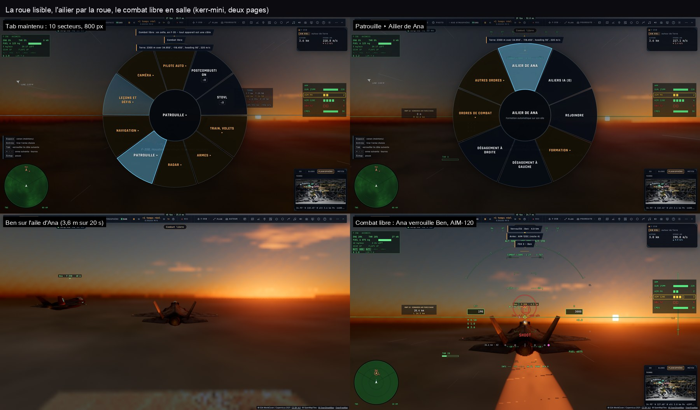
Le cockpit et le casque
La vue cockpit est la vue principale du F-35. Pas de HUD sur la verrière : la symbologie du casque (sa couleur — vert, ambre, cyan, blanc — et sa luminosité se règlent), avec ses annonces NAV et le point actif. Devant le pilote, l'écran panoramique tactile, dessiné en direct et touché à la souris : TSD (la carte mobile, la route, les pistes radar, les zones d'une mission), FCS, ENG, FUEL (le bingo), STOVL, CNI, ADI, check‑lists. En haut à gauche, l'avionique : régime, poussée, carburant et son bingo, train, volets, modes du pilote automatique (ALT HDG A/T LNAV VNAV), facteur de charge et sa limite, alarmes.
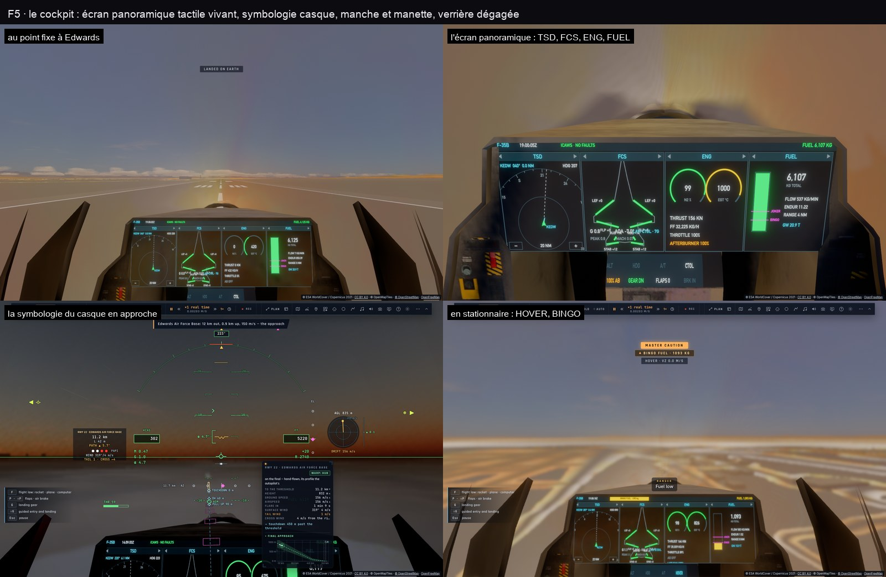
Les niveaux d'assistance
Réglages › F-35 › Assistance :
Manuel
La loi directe : le manche sur les gouvernes, sans calculateur. Décrochages et vrilles possibles ; on en sort en lâchant tout.
Réaliste (par défaut)
Le vrai F-35 : le manche commande un facteur de charge (1 g au neutre, 7 g plein arrière), 50° d'incidence au plus, le roulis autour du vecteur vitesse.
Assisté
Les gaz deviennent une vitesse tenue, l'incidence est limitée à 20°, la protection du sol est toujours active.
Débutant
On vise, l'avion y va : le manche déplace un anneau cyan dans la vue, l'avion incline et tire pour le rejoindre.
- Auto‑GCAS — dix fois par seconde, l'avion prévoit la ressource qu'il ferait ; si le relief devient trop proche, il prend la main au dernier moment (ailes à plat, puis montée), « AUTO GCAS — FLY UP » au HUD, et la rend une fois dégagé.
- Auto‑ACAS — un autre avion (combat, trafic réel, joueurs, ailiers) prévu à moins de 150 m dans les 8 s : un évitement vertical.
- Les deux sont actifs par défaut (réglage Auto‑GCAS · Auto‑ACAS), toujours aux niveaux Assisté et Débutant ; ils se taisent en loi directe, train sorti, en formation, en approche ILS ou d'appontage, en STOVL.
- Le corps du pilote (réglage Effets de g) — le voile gris, puis noir sous forte charge tenue, la perte de connaissance à 9 g (la loi de l'avion continue de voler), le voile rouge sous −1,5 g ; la respiration au masque en vue cockpit.

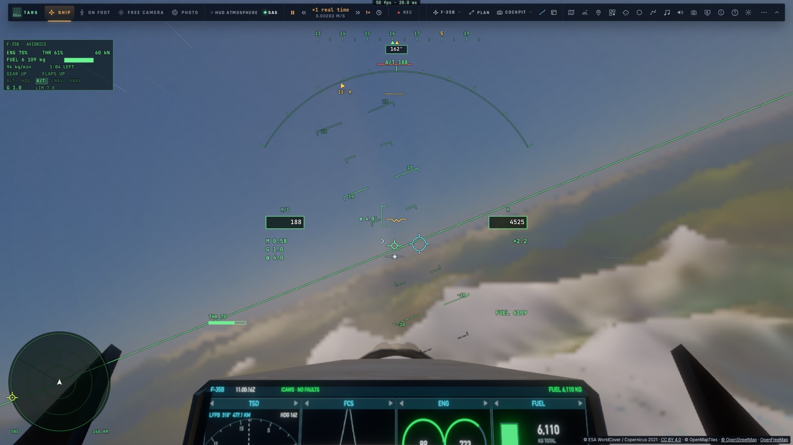

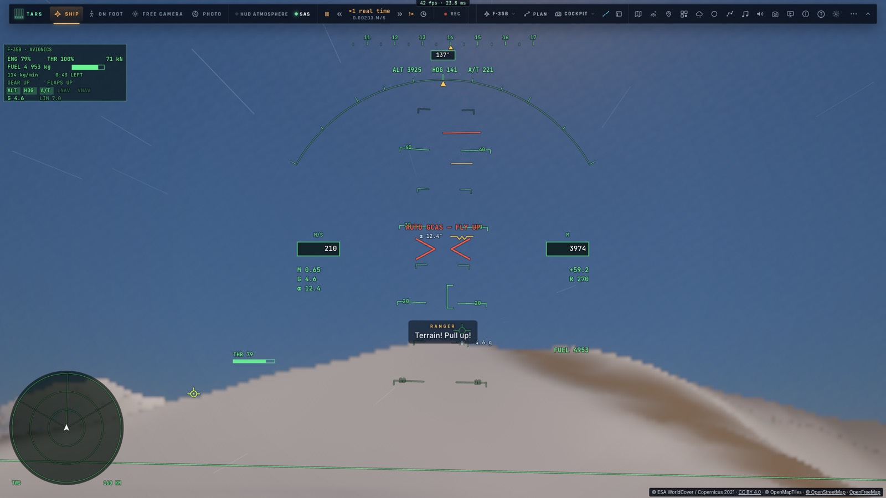
Les modes du pilote automatique
Tab maintenu › Navigation › Modes du pilote automatique :
- Orbite ici (à droite ou à gauche) — un cercle autour d'un point, à 40° d'inclinaison (4 km au moins), altitude et vitesse tenues (« ORBIT »).
- Hippodrome ici — l'attente sur l'endroit où l'on est.
- Suivi de terrain — à 100, 150 ou 300 m du sol (« TF 150 ») : l'avion monte devant le relief et redescend dans les vallées ; le cap reste celui du pilote automatique ou de la navigation.
- Ravitailleur — un ravitailleur ami, TEXACO 11, placé 25 km devant à 7 000 m : rejoint jusqu'à sa position pré‑contact (« PRE‑CONTACT TEXACO 11 »).
- Approche ILS — la piste la plus proche (à moins de 150 km), face au vent : le point d'approche initiale à 18,5 km, le localizer, le glide à 3° capté par en dessous, train et volets au point d'approche finale (9,3 km), les minimums à 60 m (instable : remise des gaz), l'arrondi, le roulage freiné et la note sur 20. Les aiguilles de l'ILS s'affichent autour du centre du casque.
- Voler vers… (la carte), Voltige (les démonstrations), Modes coupés.
Radar & combatLe radar toujours allumé, l'interception, le canon et les missiles
Le radar
L'AN/APG‑81 est allumé dès que le F-35 est en l'air. Son faisceau balaie ±60° devant le nez en 2 s ; sa portée dépend de la taille de la cible (environ 150 km pour un chasseur) ; il ne voit rien derrière l'horizon ni derrière le relief, et perd dans le fouillis du sol un avion qui croise en travers. Son écran, dans le casque en bas à gauche, montre le relief, les pistes avec leur route et leur hauteur par rapport à vous, les missiles en vol, le verrou cerclé.
- Les modes — RWS (les contacts), TWS (les pistes, leurs vitesses et leurs routes), STT (le verrou seul) : Radar › Mode dans la roue.
- Les couleurs — ami bleu, neutre blanc (un avion de ligne qui répond au transpondeur), inconnu jaune (identifié de près), hostile rouge ; les amis de la liaison de données en cercles creux.
- Le verrou — un appui bref sur Tab verrouille la piste la plus proche, puis la suivante ; avant le premier contact, le radar cherche et verrouille le premier qui vient. Hors combat, une boîte sur la cible donne son nom, sa distance, sa vitesse et son altitude.
L'interception
Sur une piste verrouillée, le casque donne le cap de collision (« INTC 070 ») et son repère, le temps avant la rencontre (TTI), l'angle d'aspect (« AA 35R »), la poursuite volée (LEAD, PURE, LAG). ⇧Tab (ou Radar › Intercepter) la fait voler au pilote automatique : la course par l'arrière, la jonction, puis la patrouille à 300 m derrière et 60 m sur sa gauche (« ICPT », « JOIN », « SHDW »). Le manche ou les gaz la coupent.
Les armes
Le canon de 25 mm
220 coups. Le réticule se place là où tirer — il anticipe le virage de la cible —, « IN RANGE » entre 150 m et 1,2 km ; l'entonnoir montre la gerbe ; un obus sur cinq est traçant.
AIM‑120 et AIM‑9X
Le missile radar pour la distance, l'infrarouge de près et hors de l'axe ; tous deux guidés par navigation proportionnelle. « SHOOT » en rouge quand le tir est bon.
GBU‑32 JDAM et JSM
La bombe guidée planée jusqu'à son point, son point de chute au HUD ; le missile antinavire (configuration antinavire) : il croise au ras de l'eau et coule une frégate.
Leurres et paillettes
Contre les missiles qui vous poursuivent : l'alerte missile et ses directions au HUD, et TARS qui dit quoi faire.
Les menaces : des chasseurs agresseurs (réglage Agresseurs : facile, normal, as), des sites SAM qui tirent sur ce qui vole au‑dessus de 150 m, des frégates. Un appareil touché fume ; détruit, il part en vrille, brûle et s'écrase. En combat, TARS annonce les missiles tirés sur vous (« Départ missile, 11 heures, 8 km — dégagement à gauche, leurres ») et les coups reçus ; l'AWACS Darkstar annonce les bandits au radar. Réglages F-35 : munitions et carburant infinis, invulnérable, missiles ennemis, annonces des menaces.

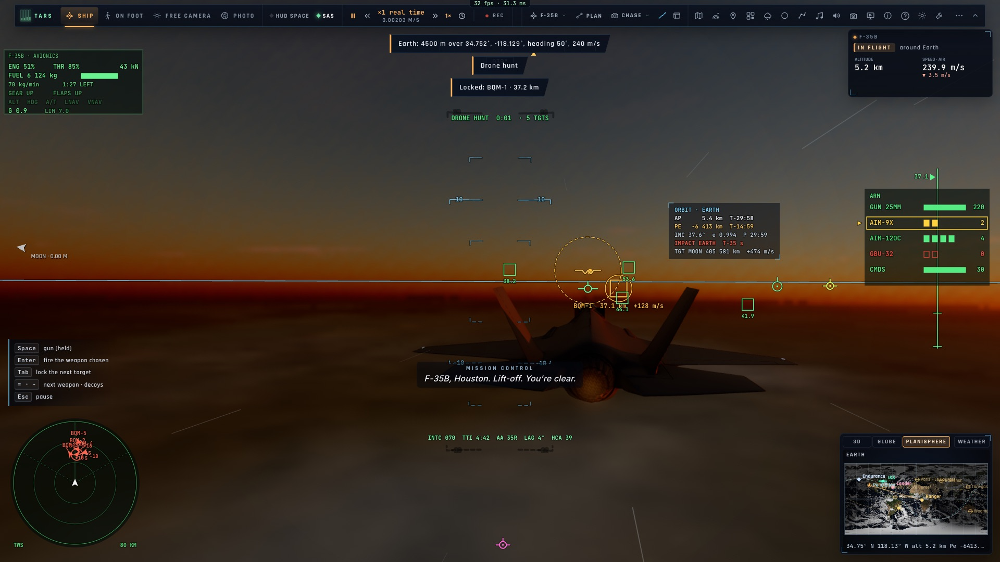

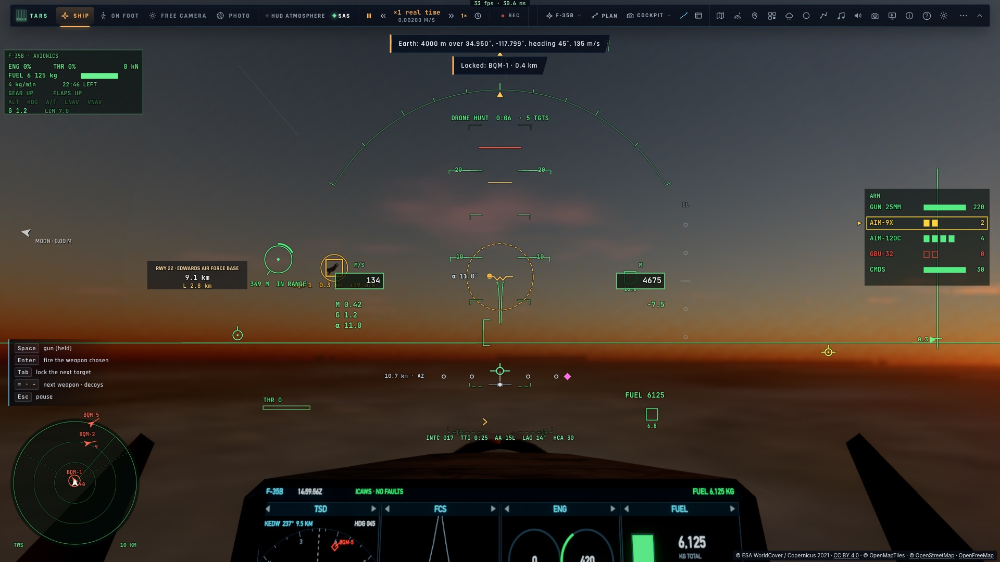
La patrouilleFormations, ailiers IA et ordres du leader — Tab maintenu › Patrouille
- Les ailiers IA — Ailiers IA dans la roue (ou Réglages › Formation, ou TARS) : de zéro à trois F-35, Deux, Trois et Quatre, qui volent avec les forces du vrai avion. Ils se mettent à leur poste, décollent et atterrissent en patrouille avec vous, annoncent leurs contacts (« Deux, contact, bandit… »), combattent et peuvent être abattus.
- Les formations — Formation ▸ : échelon droite ou gauche, fingertip, triangle, losange, ligne de front, colonne, patrouille étalée ; l'écartement (serré, normal, large) et votre poste quand vous volez sur l'aile d'un autre sont dans Réglages › Formation. Les postes changent sans à‑coup, en passant sous le leader.
- Les ordres — rejoindre, dégagement à gauche ou à droite, Ordres de combat ▸ (attaquer ma cible, engager les hostiles, me couvrir), Autres ordres ▸ (serrer, s'écarter, tenir ici, rentrer à la base, passage en losange). Chacun est dit à la radio ; il s'adresse aux ailiers IA et aux joueurs de la salle en formation sur vous. TARS les comprend aussi à la voix : « Patrouille, en losange », « Dégagez à gauche ! ».
- Sur l'aile d'un autre — Ailier de … pour un joueur de la salle (le pilote automatique vole la formation, à la première place libre), Formation sur la cible (roue Radar) pour un avion de ligne réel verrouillé ; Quitter la formation rend la main, l'altitude, le cap et la vitesse tenus.

Porte-avionsLe Gerald R. Ford, le Kiev, le HMS Implacable
Les porte‑avions font route face au vent, escortés de deux frégates ; ils tanguent et roulent avec la mer, et l'avion posé sur le pont est porté par lui. On les trouve dans les missions, les leçons et les vues d'exception, ou en demandant à TARS (« fais apparaître un porte‑avions »). La variante se choisit dans Réglages › F-35 › Variante : F-35B (décollage court, atterrissage vertical) ou F-35C (catapulte et brins, une aile plus grande, une crosse).
F-35B : l'appontage vertical
F7 à moins de 30 km d'un porte‑avions : le pilote automatique remonte le long de bâbord, passe en STOVL, se met en stationnaire à côté du pont, traverse au‑dessus de la tache et descend. Trop lourd, il dit combien de carburant brûler. L'officier d'appontage note : OK, Passable, Non noté.
F-35B : le décollage court
U sur le pont : la course tuyère vers l'arrière, la rotation, la soufflante qui porte ; si le pont dégagé est trop court pour la masse, un décollage vertical — ou un refus qui dit pourquoi.
F-35C : catapulte et brins
U sur le Ford : la navette, la mise en tension, le lancement à 72 m/s. F7 : l'approche au « meatball » sur le plan de 3,5°, la crosse qui prend l'un des trois brins (le bon : le deuxième) — ou le bolter, et un nouveau tour.
Cas I, II et III
Choisis par l'heure et le temps. Cas I : l'initiale, le break, la vent arrière, le 180. Cas III (la nuit, plafond bas) : le marshal à 21 nautiques et la descente dans l'axe. Cas II : un mélange des deux.
Paddles, l'officier d'appontage, parle pendant la finale (« Roger ball », « De la puissance ! », l'alignement, la remise de gaz) et note chaque passage : OK souligné, OK, Passable, bolter, Non noté, remise de gaz, Coupé. Mother, le porte‑avions, annonce le cas, les autorisations et les lancements. Les qualifications d'appontage — jour, nuit, mer forte (houle de 4,4 m) — enchaînent quatre passages notés : qualifié à partir d'une moyenne de 3,0 sans aucun passage coupé.
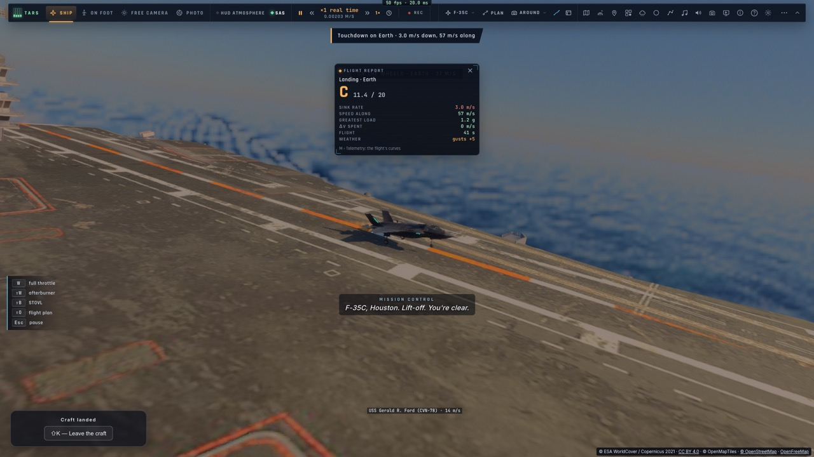
Défis, combats & missionsTab maintenu › Leçons et défis › Défis, combats, missions
Les défis
Des parcours de portes en basse altitude — la Mach Loop galloise, Rainbow Canyon, le slalom de Rogers —, l'atterrissage noté, l'atterrissage vertical. Médailles et records gardés.
La voltige
Dix figures (looping, Immelmann, split‑S, tonneaux, huit cubain, vol dos, passage à grande incidence, renversement à 7 g, vrille et sortie) : Regarder le pilote automatique les voler, ou Voler et être noté sur 20. La boîte de voltige : cinq figures enchaînées, sur 100.
Les combats
Chasse aux drones, duel au canon, interception à deux contre un, frappe au sol — sur les champs de tir du Mojave.
Les missions
Treize missions avec briefing, objectifs et débriefing noté : le Renegade sur les Alpes, une frappe en Corse depuis le Ford, des escortes (Ajaccio, le VIP jusqu'à Nice), Red Air au large d'Hyères, une frappe antinavire, les qualifications d'appontage, la patrouille acrobatique à Salon, et trois missions en équipe.
- Le briefing, puis Lancer la mission : l'avion, sa variante et son emport, la météo et l'heure sont réglés. Les objectifs en cours s'affichent en haut à gauche (•, ✓, ✗) avec le chronomètre ; l'objectif en cours est marqué dans la vue (un cercle et un losange orange, son nom, sa distance) et sur la bande de cap.
- Un vol réel peut être repris par une mission : l'avion de ligne entendu le plus proche quitte le trafic et devient l'appareil à intercepter ou à escorter.
- La carte de mission (bouton Carte du bloc des objectifs, ou Navigation › Carte de mission) : les zones des objectifs, la portée des SAM, les unités et leurs symboles, les porte‑avions, le trafic réel, le plan de vol ; un clic puis Voler vers met le lieu dans le plan et engage la navigation ; les points du plan se glissent à la souris.
- Créer ses missions — Créer une mission (ou Modifier une mission du jeu) : l'éditeur sur la carte, un outil puis un clic pour placer le départ, les lieux, les unités (SAM, camion, bunker, drone, chasseur, avion de ligne, vol réel, porte‑avions, navire) ; leurs objectifs, leur heure d'apparition, les messages. La garder parmi « mes missions », copier son lien (
#mission=…: l'ouvrir lance le jeu sur son briefing), l'exporter en JSON. TARS sait aussi en écrire une à la voix : « une escorte de l'A320 AFR123 jusqu'à Nice ».

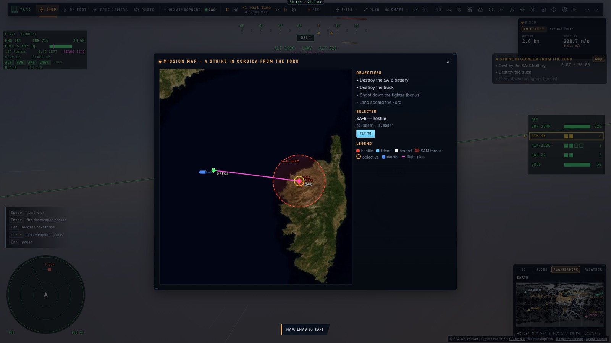

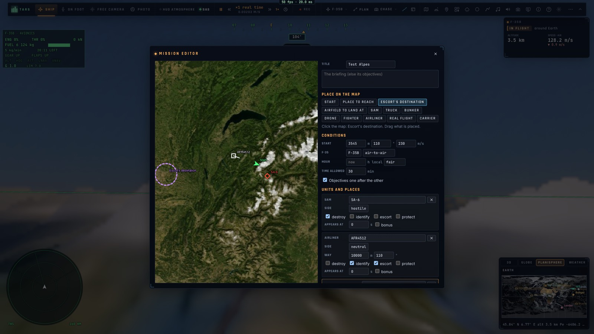
L'école de volTab maintenu › Leçons et défis › École de vol
Dix‑huit leçons : le premier vol, le tour de piste, l'atterrissage, l'approche ILS, le cas I et le ball, le vol en patrouille, l'interception, le canon, et les dix figures de voltige. Chaque fiche a son résumé, son schéma interactif, ses étapes chiffrées et les erreurs courantes, et trois boutons :
Voir la démonstration
TARS vole toute la leçon, jusqu'au bout — la part du pilote comprise —, en disant chaque étape. Elle est notée d'un mot, sans écran de débriefing.
Guidé : TARS, puis vous
TARS vole la première partie et la commente, puis « À vous les commandes » : vous volez la suite, l'instructeur regarde.
Essayer
L'avion est placé ; c'est à vous de voler toute la leçon, l'instructeur regarde.
L'instructeur (réglage Instructeur : coupé, annonces seules, complet) annonce chaque écart tenu au‑delà de sa limite avec sa correction (« Bas — sous le glide : remonte un peu le nez et ajoute un peu de gaz »), le pire d'abord, sans se répéter en boucle. Son panneau, à gauche, montre le schéma de la manœuvre avec votre trace en direct, qui vole (TARS AUX COMMANDES ou À VOUS), l'étape en cours, une jauge par paramètre ; Explique met en pause et ouvre la fiche. À la fin, le débriefing : une note sur 20 et une lettre, les graphiques de ce qui a été volé face à l'idéal, les deux points à travailler, Réessayer.

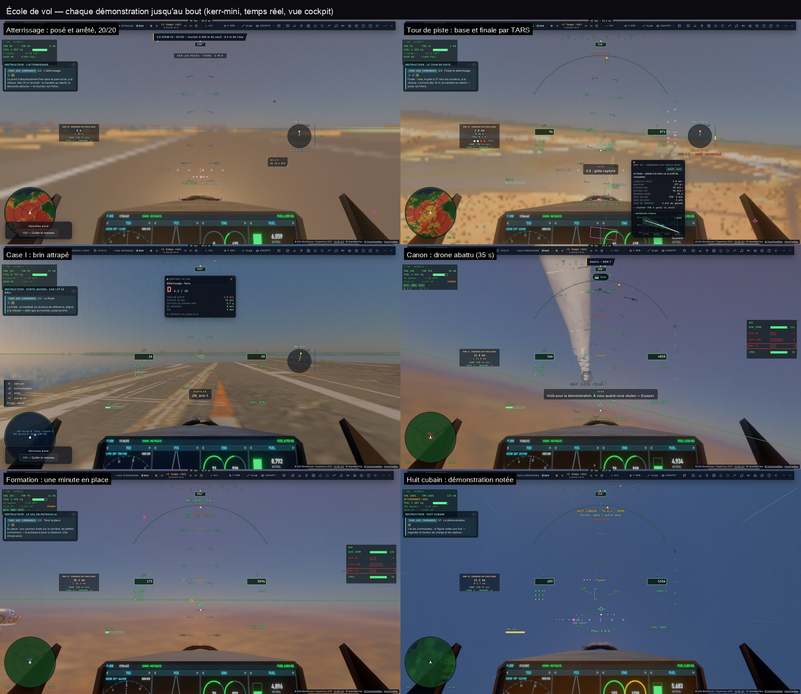

Trafic réel & merLes vrais avions et navires autour de vous
- Les avions de ligne réels (ADS‑B, par adsb.lol ou OpenSky) dans 120 km autour de l'appareil piloté : les douze plus proches dans 25 km avec leur modèle (A320 ou CRJ‑900, à la taille de leur type), leurs feux et leurs traînées de condensation, les autres en points lumineux ; leurs étiquettes (indicatif · immatriculation · type · altitude) dans 40 km. Ils sont montrés une minute en différé, leur vol reconstruit sans saut (réglage Avions en différé : direct, 30 s, 1 min, 2 min). Au radar : neutres.
- Les navires réels (AIS) dans 60 km quand le serveur en reçoit : porte‑conteneurs, pétroliers, ferries, chalutiers, voiliers, leur sillage dans la mer, leurs feux la nuit.
- Désactivable (Réglages › Trafic › Trafic réel) ; absent hors ligne. Les sources sont créditées à l'écran.
- La mer — des vagues calculées sur la carte graphique, la houle et la mer du vent, les moutons, les reflets des navires et de l'avion ; l'état de la mer réel du jour (Open‑Meteo), ou celui que lève le vent.
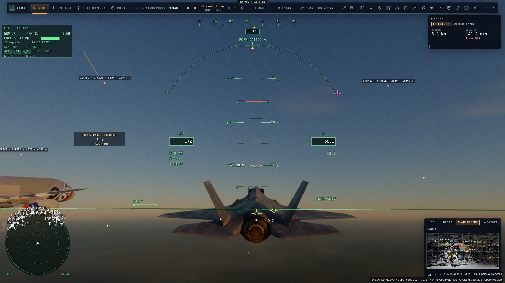
Replay, bande-annonce & vues d'exceptionTab maintenu › Caméra · Leçons et défis › Vues d'exception
- Le replay — les deux dernières minutes et demie de vol, gardées en continu. Le vol est gelé pendant le replay et reprend exactement où il était. Ses caméras : poursuite, tour, passage, cockpit, réalisateur. Ses touches : Espace lecture / pause, ← → 5 s, 1–5 les caméras, Échap retour au vol ; ralenti ½× et ¼× ; les meilleurs moments marqués en ambre. Pas de replay dans une salle de jeu à plusieurs.
- La bande‑annonce — jusqu'à trois moments de 8 s choisis par le jeu (rase‑mottes, virage serré, passage du mur du son, tirs, toucher des roues, patrouille), en bandes cinéma avec carton‑titre et légendes ; Vidéo… la rend en film à pleine qualité.
- Les vues d'exception — treize scènes, chacune avec son heure, sa météo, son défi et son cadrage photo : l'éclipse totale du 12 août 2026 poursuivie à Mach 1,6, le lever de la pleine Lune en patrouille sur le Mont‑Saint‑Michel, les aurores des Lofoten, le coucher de soleil sur le porte‑avions, le Grand Canyon, Monument Valley, la Mach Loop, le Star Wars Canyon, le Geirangerfjord, l'Himalaya, les tours du Paine, les volcans d'Islande, la tempête et l'appontage.
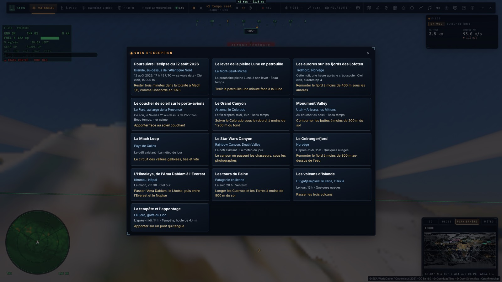
ÉclipsesLe bouton Éclipses du HUD, le menu pause
Le calculateur d'éclipses couvre tout le système solaire, de 1990 à 2150 : les éclipses de Soleil (totales, annulaires, hybrides, partielles) avec leur carte — la bande de totalité, les zones de partialité, le maximum — et ce qu'on en voit d'ici (les contacts, l'obscuration, la Lune passant devant le Soleil, à faire glisser ou jouer) ; les éclipses de Lune avec l'ombre de la Terre et la carte de visibilité ; les transits de Mercure et Vénus ; les phénomènes des satellites (Io dans l'ombre de Jupiter, son ombre sur lui…) ; et le Soleil caché vu d'un autre monde (de la Lune, de Mars, d'Io…). Cliquez une carte pour regarder depuis ce lieu ; Aller voir vous y emmène, à la bonne date et vers le Soleil ou la Lune. Au rendu, la Lune éclipsée rougit, les satellites projettent leur ombre, et au ras de l'horizon la réfraction peut montrer ensemble le Soleil et la Lune éclipsée (un sélénélion).
SurimpressionsMode photo › Surimpression…
Comme un photographe sur son trépied, le jeu pose la même vue à des dates différentes et superpose les poses en une seule image. L'analemme : le Soleil à la même heure tous les 1 à 10 jours pendant un an, depuis le même lieu — son huit au‑dessus du paysage au crépuscule, cadré tout seul. On peut écrire la date à côté des Soleils (une par mois ou toutes) et leur position (azimut, hauteur, et le lieu dans un coin). L'image se télécharge en PNG, jusqu'en 4K. TARS sait aussi la faire : « fais‑moi l'analemme de Paris à midi », ou /analemma.
L'éclipse : les phases avant, la totalité (ou l'anneau), les phases après, depuis le même trépied — de Soleil ou de Lune, choisie dans la liste des éclipses vues de votre lieu, ou depuis le bouton Surimpression de sa fiche dans le calculateur. Chaque disque est pris au téléobjectif puis posé à sa place au‑dessus du paysage de la totalité ; l'heure et la part cachée s'écrivent à côté, la légende dans le coin. Un disque caché par une colline est laissé de côté. Autres mises en page : en bande (les phases en rang, nord en haut) et, pour une éclipse de Lune, dans l'ombre de la Terre (chaque Lune à sa place dans l'ombre et la pénombre dessinées). Et les transits de Mercure et de Vénus : la planète traversant le Soleil en une file de points. TARS : « fais l'éclipse du 12 août 2026 vue de Burgos en surimpression », ou /eclipsephoto.
La nuit : le filé d'étoiles (des heures d'une nuit noire, vers le pôle ou un quart du ciel, avec ou sans queue de comète), le trajet de la Lune (au fil d'une nuit, à la même heure jour après jour pour voir ses phases, ou chaque jour lunaire : sa boucle, l'analemme lunaire) et le passage de l'ISS (choisi parmi ses passages visibles des dix jours, sa traînée continue ou en pointillés, rougissant en entrant dans l'ombre de la Terre). TARS connaît aussi les passages : « quand passe l'ISS ? », /isspasses.
Météo & aéroportsLe bouton Météo du HUD, le menu pause
Beau temps, nuageux, couvert, brouillard, pluie, orage, vent, poussière de Mars, au hasard — ou la vraie météo, partout sur la Terre et à la date du jeu : celle du modèle Open-Meteo (ses prévisions jusqu'à 15 jours, ses archives depuis 1940 — le ciel réel du jour d'une éclipse passée), le METAR de la piste quand la date est maintenant ; hors de portée, un temps plausible. Vue de l'espace, la Terre porte alors les nuages de ce jour-là, tels que les satellites les ont photographiés (depuis 2000), et la carte météo montre leur image. Le vent souffle avec la hauteur, la turbulence secoue, les nuages ont leurs couches, le brouillard son sommet.
- Les aéroports vivants — balisage OACI (rampe d'approche, PAPI, axe, bords), manche à air, la piste en service choisie face au vent.
- L'approche — les cartes d'approche (onglet CARTES de la tablette), le guidage MLS, les minima à 60 m ; mal engagé, W (plein gaz) fait la remise de gaz et un nouveau circuit.
- La pluie — en rideaux poussés par le vent, brillante autour des feux ; sur le pare-brise, des gouttelettes et des gouttes qui glissent en laissant leur traînée, que le vent relatif fait remonter en vol ; quelques gouttes sur l'objectif en vue extérieure ; la piste mouillée, ses flaques et les ronds des gouttes ; on l'entend tambouriner sur la verrière. Le temps en pause, elle s'arrête : gouttes figées, silence.

Son, musique & voixRéglages › Jeu › Son
- L'audio spatial — tout est synthétisé en direct : le moteur granulaire, le RCS, le vent, la cabine (étouffée, en vue cockpit), le roulement sur la piste, la station ; le réacteur du F-35 (son sifflement, son grondement, le crépitement de la postcombustion, la soufflante) ; au casque, le son est placé en 3D (HRTF), avec l'effet Doppler et le bang supersonique.
- Les annonces — en finale les hauteurs radio (300 … 10 m), « Minimums », « Taux de chute », « Terrain ! Remontez ! », et les alarmes graves du HUD dites à voix haute.
- Le contrôle de mission et la tour — Houston avec le délai de la lumière (rien de l'autre côté du trou de ver), la coupure radio dans le plasma de la rentrée, la tour qui autorise l'atterrissage.
- La radio de la patrouille — chaque rôle a sa voix et son nom dans les sous‑titres : l'ailier (ses contacts, ses tirs), l'AWACS Darkstar (les bandits au radar, les sites SAM, les victoires), le porte‑avions Mother et l'officier d'appontage Paddles ; dans une salle, ceux qui concernent votre avion sont entendus des autres joueurs (réglage Rôles radio).
- La musique — le silence, sauf aux grands moments : le décollage, la rentrée, la finale, le trou de ver, Gargantua ; et sur Miller, le tic‑tac.
- Les sous‑titres — chaque voix nommée, au‑dessus du tiers bas de l'écran.
TARS, l'IA de bordF6 — tapé : sa console · tenu : lui parler
TARS est le copilote du Ranger et du F-35, présent dans les quatre modes (son emblème en haut à gauche de la barre). Hors ligne, il répond avec ses phrases écrites et comprend les ordres courants. Avec votre clé OpenRouter (dans sa console : « Se connecter avec OpenRouter », ou coller une clé — gardée dans ce navigateur seulement), il devient un agent : il pilote, navigue, règle, montre, et se souvient de vous.
Lui parler : maintenez F6 (ou cliquez son micro) et parlez, vos mots s'affichent à mesure ; relâchez, il répond. Chrome et Safari savent reconnaître la parole ; dans Arc, Brave, Opera ou Firefox, collez une clé Deepgram sous Réglages › Jeu › TARS › « L'oreille de TARS », ou sur la ligne « Oreille » de sa console (ou /deepgram) : elle est vérifiée auprès de Deepgram puis gardée dans ce navigateur seulement, et elle entend de même partout.
Ses réglages : l'onglet Réglages de sa console réunit tout — son esprit (son modèle, ses réflexes, son humour…), sa voix (une voix naturelle Deepgram — Hector ou Agathe en français, une quarantaine en anglais — avec son grain de robot, propre ou en radio ; le robot du film en anglais ; ou une voix de votre système, son débit et sa hauteur), celles de Houston et de la tour, et son oreille (le modèle, la langue, le micro, « Tester l'oreille » qui affiche ce qu'il entend). « Essayer sa voix » le fait parler aussitôt.
Il fait
« Emmène‑nous en orbite autour de la Lune », « pose‑nous à Edwards », « vise Mars et accélère le temps », « coupe la musique et mets la vue cockpit » : il agit tout de suite, sans demander. Avant ce qui ne se défait pas, la partie est gardée sous « Before TARS » — « annule » y revient.
Il propose
« Propose‑moi un plan pour… » : il chiffre (Δv, durée, arrivée) sans rien faire, et vous montre le plan avec Accepter et Refuser (ou « oui » / « non »).
Il montre
La télémétrie en direct (altitude, vitesse, charge, inclinaison, incidence…), le couloir de rentrée, le graphe du hub, des fiches de chiffres, et les vrais écrans du jeu (carte, tablette, écrans du cockpit, rapport).
Il veille
Ses réflexes le réveillent aux moments clés — la fin d'un autopilote, les phases de la rentrée, une alerte, un écart, un rapport — et vous pouvez lui en donner : « toutes les 10 minutes, vérifie le carburant ». Un budget par heure les borne.
Il délègue
Pour une analyse en plusieurs regards, il lance des sous‑agents en parallèle (en lecture seule) et décide ensuite.
Il est copilote de chasse
En F-35, il connaît l'aviation (onze pages écrites pour lui : l'avion, l'énergie, le combat, la patrouille, le porte‑avions, l'ILS, le radar, les armes…), annonce les menaces, verrouille et tire quand vous l'ordonnez, intercepte un avion par son indicatif, donne les ordres de patrouille, lance une approche, un appontage, une leçon, une mission — et en écrit une.
Il se souvient
Votre nom, vos préférences, vos échanges, d'une visite à l'autre — onglet Mémoire de sa console, « oublie tout » pour effacer.
Sa console
Son emblème (quatre monolithes) s'anime selon ce qu'il fait : prêt, à l'écoute, réfléchit, agit, parle. Ses actions s'affichent au fil de l'eau, sa liste de tâches se coche, ses onglets donnent l'Échange, ses Agents, ses Réveils, sa Mémoire. On la déplace par sa poignée ⠿ (en haut à droite) ; fermée, une pastille montre ce qu'il fait. Échap arrête un tour en cours.


Les commandes « / »
Tout le jeu se commande aussi au clavier, sans le modèle (et sans coût) : tapez /, la liste s'ouvre avec la description de chaque commande ; ↑ ↓ pour choisir, Tab ou Entrée pour prendre ; les arguments se complètent à leur tour (corps, sites, vues, écrans, réglages et leurs valeurs…).
| Commande | Effet |
|---|---|
/target Mars · /cockpit · /chase · /view … · /shipview | La cible, les vues, retour au vaisseau |
/autopilot entry Edwards · /land · /takeoff 300 · /dock · /hold prograde | Autopilotes et maintiens |
/gear down · /flaps 1 · /throttle 0.5 · /sas on · /goaround | Les commandes de vol |
/mission Lune orbit 100 · /maneuver hohmann 800 · /execute | Le calculateur de vol |
/teleport orbit Lune 100 · /teleport glide Edwards · /warp 1000 · /date +24 | Se déplacer, le temps |
/map globe · /show entry_corridor · /sky Orion · /set music off · /quality game | Écrans, ciel, réglages |
/save · /load · /scene … · /undo · /press … · /tool … | Parties, scènes, toute touche, tout outil |
/help · /model · /mode · /plan … · /cost · /clear · /export · /skill save nom | L'agent : aide, modèle, mode, plan, coût, conversation, savoir‑faire |
@ complète un corps, un site, un écran ou un réglage dans une question ; ↑ ↓ rappellent vos questions ; ⇧Tab change son mode : Agir (il agit), Proposer (il propose chaque plan avant d'agir), Observer (il lit et montre, n'agit pas).
Réglages › Jeu › TARS : ses remarques, son honnêteté et son humour (« honesty 70 »), le modèle (GLM‑5.3 Flash par défaut, Claude Haiku 5.5…), ses réveils et leur budget par heure. Un vol vers la Lune mené par TARS coûte environ un millième de dollar.
Jouer ensembleDeux à quatre pilotes, des spectateurs et des écrans — Échap › Réseau — jouer ensemble
Le solo reste entier : rien ne se connecte tant que vous ne demandez pas une salle.
- Ouvrir le panneau RéseauLe menu pause › Réseau — jouer ensemble, ou la roue hors vol › Réseau. Choisissez votre nom et votre couleur.
- Créer une salleUn nom et un mot de passe, facultatifs : son code de six lettres s'affiche, avec Copier le lien. Envoyez le code ou le lien aux autres.
- RejoindreLe même panneau › Rejoindre une salle : le code, le mot de passe s'il y en a un, et le rôle — Pilote, Spectateur ou Instruments ; ou simplement le lien. Un téléphone ou une tablette scanne le QR code de l'onglet Écrans.
- En salleLe badge en haut à gauche (code · joueurs · latence) rouvre le panneau : onglets Équipage (Suivre, À côté, Formation, volumes), Match, Voix, Écrans. Quitter la salle en bas ; Reprendre mon engin au retour.
Une salle accueille huit appareils, dont quatre pilotes ; elle garde son horloge et les engins laissés par chacun (« Ana (absent) »). En salle, le temps est celui de tous : une accélération demandée attend que chaque pilote l'accepte.
Voler ensemble
Chacun pilote son engin ; ceux des autres sont dessinés là où ils sont, gouvernes, train et postcombustion compris, avec leur nom et leur distance, et sur le radar du F-35. À côté vous place à droite d'un autre ; Formation fait voler votre pilote automatique en échelon sur son aile.
Ailier par la roue
Tab maintenu › Patrouille › Ailier de Ana (ou TARS « rejoins Ana ») : la formation automatique à la première place libre de son aile ; les ordres du leader vous parviennent et sont exécutés.
Les matchs
Onglet Match : chacun pour soi, deux équipes, ensemble contre les agresseurs, course de portes, concours d'atterrissage — munitions infinies, invulnérable, tir ami, missiles ennemis, durée, score. Abattu, on revient au combat quelques secondes plus tard.
Le combat libre
En salle, en F-35, sans match, mission, leçon ni défi en cours : armes actives, tout appareil est une cible — les autres joueurs, les ailiers IA (les leurs et les vôtres : tir ami autorisé), les avions de ligne et navires réels que le radar voit. Abattu : de retour en l'air 6 s plus tard. Réglage Combat libre en salle.
Les voix
Onglet Voix › activer le micro : à la voix, en tenant une touche, ou toujours. Chacun entendu comme à la radio, avec les bips Quindar d'Apollo.
Suivre, regarder
Suivre un pilote : toutes les vues sur son engin, son cockpit, ses instruments. Un spectateur suit le premier pilote ; abattu en match, on suit son vainqueur jusqu'à revoler.
À pied, dans l'espace
Marcher ensemble sur la Terre, la Lune ou Mars, monter à bord de l'engin d'un ami (⇧K) ; en orbite ensemble, s'amarrer à l'engin d'un autre (B), et jusqu'à Gargantua, chacun avec son temps propre.
Les missions en équipe
Celui qui lance une mission l'envoie à la salle : chacun prend un rôle (frappeur, escorte, ailier…), et un objectif atteint par l'un l'est pour tous.
La console d'équipage
Un téléphone, une tablette ou un petit ordinateur peut rejoindre la salle comme écran d'instruments, sans faire tourner le jeu : la page crew/ (son lien et son QR code dans Réseau › Écrans › Instruments). Neuf vues en cockpit de verre : le tableau, le PFD, la navigation (ND, trafic façon TCAS), la carte (OpenStreetMap de nuit), le globe, le radar, les systèmes (moteur, carburant et bingo, configuration, pilote automatique), le plan de vol (profil vertical et branches) et la télémétrie ; métrique ou impérial.

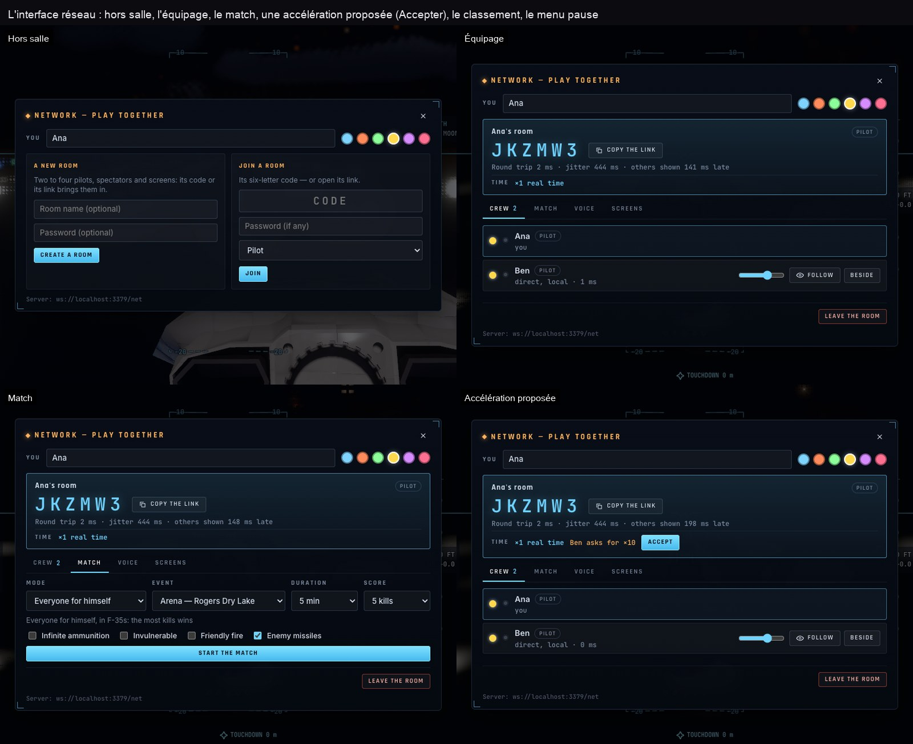

Manettes, HOTAS & écran tactile
Tout périphérique de jeu est reconnu — manette, manche, manette des gaz, palonnier : des profils connus (Thrustmaster T.16000M, TWCS, Warthog, T.Flight ; Saitek/Logitech X52, X56, Extreme 3D Pro ; VKB Gladiator ; les palonniers) ou le vôtre, réglé dans le menu pause › Commandes › Manettes et HOTAS (chaque axe, sa courbe, sa zone morte, la calibration ; chaque bouton lié à n'importe quelle action du clavier). La manette des gaz absolue garde sa position ; les vibrations suivent le moteur, le toucher, les alarmes.
Manette (Xbox · PlayStation)
| Caméra libre | |
|---|---|
| Stick gauche | Avancer · reculer · de côté (L3 maintenu : boost) |
| Stick droit | Tourner autour de la cible · regarder |
| RT · LT (R2 · L2) | Monter · descendre |
| LB · RB (L1 · R1) | Roulis |
| A (✕) | Voler jusqu'à la cible |
| B · X · Y (○ □ △) | Chute libre · orbite auto · vue suivante |
| Croix ◀ ▶ · ▲ ▼ | Cible précédente / suivante · plus près / plus loin |
| R3 · View · Menu | Recentrer · lancer / pause · le menu pause |
| Dans les menus | Croix ou stick gauche ▲ ▼ · A choisir · B retour |
| En vol (vaisseaux spatiaux) | |
|---|---|
| Stick gauche | Tangage · lacet |
| LB · RB | Roulis |
| RT · LT | Gaz + · − |
| A | SAS |
| X · Y | Prograde · rétrograde |
| B | Couper les gaz |
| Croix ▲ ▼ | Vue suivante · précédente |
| R3 | Regarder droit devant |
Le F-35 à la manette
Dès qu'on pilote le F-35 avec une manette (Xbox 360, Xbox, PlayStation), elle prend la disposition d'un chasseur (un profil personnel garde la priorité) :
| Stick gauche | Tangage (tiré : cabrer) · roulis |
| Stick droit | La tête : regarder où il pointe ; lâché, elle revient droit devant |
| R3 maintenu | Le zoom ; relâché, la vue revient |
| RT · LT | Gaz + · − |
| LB · RB | Palonnier gauche · droite |
| L3 | Postcombustion |
| A (✕) maintenu | Le canon |
| B (○) | Tirer l'arme choisie (hors combat : acquitter une alarme) |
| X (□) | Arme suivante |
| Y (△) | Appui bref : verrouiller la cible suivante · maintenu : l'interception |
| Croix ▲ ▼ ◀ ▶ | Train · volets · leurres · aérofrein |
| View | Appui bref : la vue suivante · maintenu : la tête verrouillée sur la cible |
| Menu | Appui bref : les tenues du pilote automatique · maintenu : les réglages |
Au HOTAS, la manette des gaz garde son cran de postcombustion ; la roue des ordres de patrouille (F13) se pose sur un bouton. Au clavier, la patrouille et le canon restent difficiles : une manette ou un HOTAS aide beaucoup.
Manette non détectée ? Appuyez sur un bouton avec la page au premier plan. Une manette Xbox 360 filaire dans Chrome, Edge ou Arc se connecte en USB depuis l'aide‑mémoire (?).
Écran tactile
Sur téléphone ou tablette, en vol : un manche en bas à gauche (tirer vers soi : cabrer ; gauche / droite : lacet), une manette des gaz en bas à droite qui reste où on la laisse, et deux boutons de roulis à maintenir. SAS, maintiens, autopilotes et planificateur sont des boutons du HUD.

Sauvegardes & outilsLe menu pause, F5 · F9 — et F10 pour les développeurs
Sauvegarder et Charger sont dans le menu pause (Échap) : des sauvegardes nommées, la sauvegarde automatique (le jeu reprend là où vous l'avez laissé à la visite suivante), et F5 / F9 pour la sauvegarde et le chargement rapides. Une mission se partage par son lien (#mission=…), une salle par le sien (#join=CODE).
Les outils de jeu — F10
Réservés aux développeurs : ils n'apparaissent que dans une version locale ou avec ?dev dans l'adresse.
Ranger
L'état en direct : sphère d'influence, statut (posé, en vol, suborbital, en orbite…), altitude, vitesses, périapside, apoapside, inclinaison, période, prochain événement.
Place
Mettre le Ranger en orbite autour de n'importe quel astre, ou le poser au sol en cliquant sur un globe ou un planisphère. Raccourcis : orbite basse, pas de tir KSC, orbite lunaire basse.
Target · SOI
La chaîne des sphères d'influence et tous les astres, avec rayon et distance — un clic les vise.
Time
Accélération de ×1 à ×1 000 000, pause, et réglage de la date de la scène.
Saves
Sauvegardes nommées, sauvegarde automatique, export / import d'un fichier, lien à partager vers un moment précis.
Audit & Journal
Des vérifications automatiques de la simulation, et l'historique de la partie : messages du pilote, changements de sphère, sauvegardes.


Pour aller plus loin : la console du navigateur expose __bh.game (__bh.game.help() pour la liste) — voir GAME-TOOLS.md et MAP.md.
Astuces
Rien ne bouge ?
Le temps est peut‑être en pause : Espace. Ou revenez au temps réel avec !. Dans une salle, le temps est celui de tous.
Le F-35 part n'importe où ?
⇧X : ailes à plat, légère montée, vitesse sûre, puis les tenues. Pour débuter, Réglages › F-35 › Assistance : Débutant ou Assisté — et l'école de vol.
Le voyage est long
Une fois le plan lancé (EXECUTE), le temps s’accélère tout seul entre les allumages (auto‑warp). Vous pouvez choisir le vôtre avec ; : — il reste plafonné pour ne pas rater un allumage.
Perdu dans l'espace ?
M en vol, puis Fit pour recadrer la carte ; ⇧R remet la caméra à sa place.
Demandez à TARS
F6 puis « que dois‑je faire ? », ou /help pour toutes les commandes.
Une belle image
Pause (Espace) pour que l'image s'affine, H pour cacher l'interface, P pour l'enregistrer — ou le mode photo (F4) : exposition, focale, profondeur de champ, rendu ; Échap pour en sortir. La capture de la barre du haut rend la vue sans bruit et l'enregistre toute seule. Réglages › Rendu : Afficher les FPS.